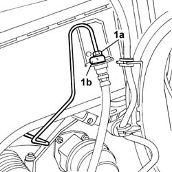
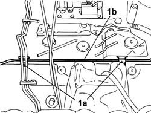
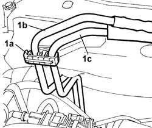
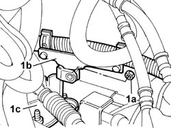
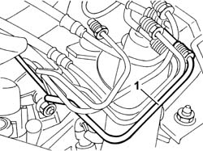

3340B56 RIGID PIPE from hydraulic CONTROL UNIT to RIGHT FRONT BRAKE - R.R.
- Path
- Procedures > 33 BRAKES > 3340 ANTI-LOCK BRAKING SYSTEM (A.B.S.) > 3340B ABS SYSTEM PIPES > 3340B56 RIGID PIPE from hydraulic CONTROL UNIT to RIGHT FRONT BRAKE - R.R.
- Kind
- repair procedure (removal / refitting; the operation number is the code)
- Applies to
- engines: 2.4 20V, 3.0 V6, 3.2 V6, 2.4 JTD 10V; all production periods
- Interactive page
- https://sloeber94.github.io/elrnDB-lThss/en/#/78678
Applies to: engines: 3.0 V6, 3.2 V6; all production periods
 Removing
Removing
 Refitting
RefittingSee in Op. 3340A12 A.B.S. hydraulic and electronic CONTROL UNIT - R.R. - Includes bleeding air
-
1. Undo the connector (1a), remove the spring (1b) and release the flexible section of the brake pipe from the rigid section.

Applies to: engines: 3.0 V6, 3.2 V6; all production periods
1. Release the rigid pipe (1b) from the retaining bands (1a) on the engine compartment bulkhead and remove it without damaging it.

Applies to: engines: 3.0 V6, 3.2 V6; all production periods
Refitting
Removing- Position the pipe securing it to the retaining bands on the engine compartment bulkhead.
- Connect the flexible section of the brake pipe to the rigid section.
- Tighten the connector fixing the rigid section to the flexible section to torque.
 | Value - daNm | Fastening | Component | Ø |
|---|---|---|---|---|
. | 1.4 | Connector | BRAKING SYSTEM PIPE BRAKES | M10 |
- [1004B17]
See in Op. 3340A12 A.B.S. hydraulic and electronic CONTROL UNIT - R.R. - Includes bleeding air
Applies to: engines: 2.4 20V, 2.4 JTD 10V; all production periods
Removing
Refitting- Position the vehicle on a lift.
See in Op. 4450B04 Right FRONT WHEEL (one) - R.R.
-
1. Undo the connector (1a), remove the spring (1b) and release the flexible section of the brake pipe from the rigid section.
Applies to: engines: 2.4 20V; all production periods
See in Op. 1048A28 vacuum air circuit resonator pipe - r+r
1. Release the single fuel supply pipe (1b) and the anti-evaporation system pipe (1c) from the retaining bands (1a).

Applies to: engines: 2.4 JTD 10V; all production periods
See in Op. 1048A48 HOSE BETWEEN RESONATOR AND THROTTLE CASING - R.R.
Applies to: engines: 2.4 20V, 2.4 JTD 10V; all production periods
1. Undo the fixing nut (1a) and release the wiring holder bracket (1b) from the gearbox flexible control cables mounting bracket (1c).

Applies to: engines: 2.4 20V, 2.4 JTD 10V; all production periods
See in Op. 3340A12 A.B.S. hydraulic and electronic CONTROL UNIT - R.R. - Includes bleeding air
1. Working from the engine compartment, remove the rigid pipe from the electro-hydraulic control unit to the left front brake without damaging it.

Applies to: engines: 2.4 20V, 2.4 JTD 10V; all production periods
Refitting
Removing- Working from the engine compartment, fit the rigid pipe from the electro-hydraulic control unit to the left front brake without bending or damaging it.
- Fit the wiring holder bracket and secure it to the gearbox flexible control cables mounting bracket using the nut.
See in Op. 3340A12 A.B.S. hydraulic and electronic CONTROL UNIT - R.R. - Includes bleeding air
Applies to: engines: 2.4 JTD 10V; all production periods
See in Op. 1048A48 HOSE BETWEEN RESONATOR AND THROTTLE CASING - R.R.
Applies to: engines: 2.4 20V; all production periods
See in Op. 1048A28 vacuum air circuit resonator pipe - r+r
- Secure the single fuel supply pipe and the anti-evaporation system pipe to the retaining bands.
Applies to: engines: 2.4 20V, 2.4 JTD 10V; all production periods
- Connect the flexible section of the brake pipe to the rigid section.
- Tighten the connector fixing the rigid section to the flexible section to torque.
| Value - daNm | Fastening | Component | Ø |
|---|---|---|---|---|
. | 1.4 | Connector | BRAKING SYSTEM PIPE BRAKES | M10 |
- [0010T64]
- [0010T65]
See in Op. 4450B04 Right FRONT WHEEL (one) - R.R.
-
- Remove the vehicle from the lift.
Topics linked from this page (5)
- 1004B17 POWER UNIT with automatic transmission, complete with support frame, front suspension- R.R. for versions with air conditioning
- 1048A28 vacuum air circuit resonator pipe - r+r
- 1048A48 HOSE BETWEEN RESONATOR AND THROTTLE CASING - R.R.
- 3340A12 A.B.S. hydraulic and electronic CONTROL UNIT - R.R. - Includes bleeding air
- 4450B04 Right FRONT WHEEL (one) - R.R.